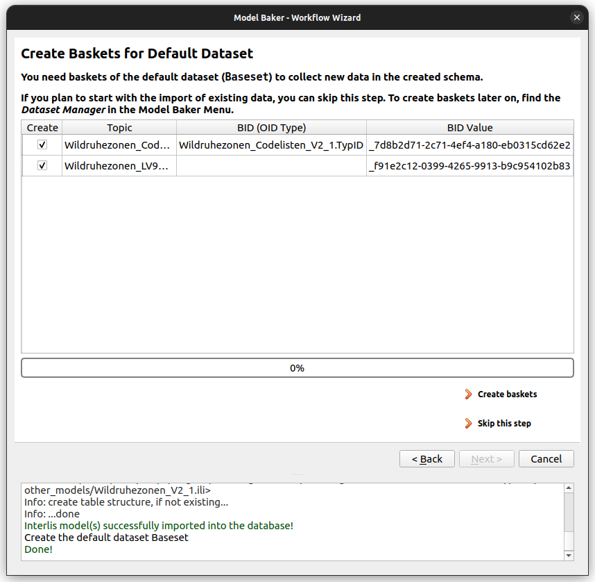

Flux de travail d'importation de modèles et de données
L'assistant est lancé à partir de l'icône de la barre d'outils ou de Base de données > Model Baker > Assistant d'import/export.
Pour [choisir les fichiers de données et les modèles à importer ou générer une nouvelle base de données] (#source-selection), suivez la description ci-dessous. Pour générer un projet QGIS à partir d'une base de données existante, allez au bas de ce guide. Pour exporter des données à partir d'une base de données existante voir le guide pour cela.
Note
L'assistant s'ouvre également lorsque vous déposez dans QGIS un fichier portant l'extension xtf, ili ou xml (xml uniquement lorsqu'il est déposé avec un fichier portant l'une des autres extensions).
1. Sélection des sources
La première page vous permet de sélectionner les sources à importer.
Modèle INTERLIS
Les sources peuvent être des modèles INTERLIS stockés dans des fichiers ili que vous sélectionnez sur votre système local (avec le navigateur de fichiers  ou par glisser-déposer).
ou par glisser-déposer).
Vous pouvez également rechercher des modèles INTERLIS dans les [dépôts] (../../background_info/repositories) ou les [répertoires de modèles personnalisés] (../plugin_configuration/#custom-model-directories). Étant donné que les noms de modèles doivent être indiqués strictement tels qu'ils ont été orthographiés dans les fichiers INTERLIS, une fois que vous commencez à taper, l'autocomplétion vous aidera à découvrir les modèles disponibles avec leur orthographe correcte. Ajoutez-les avec le .
Note
Les modèles provenant des dépôts sont mis en cache localement. Si vous souhaitez effacer ce cache, utilisez le bouton Effacer le cache.
Cela vous conduit à un processus de création de la base de données physique dans PostgreSQL, MSSQL ou GeoPackage.
Fichiers de transfert et de catalogue (fichiers de données)
Le xtf est un fichier de transfert INTERLIS, contenant des données spatiales et/ou alphanumériques stockées au format XML. Les catalogues ou les listes de codes sont techniquement les mêmes mais ont généralement l'extension xml.
La sélection des fichiers de données vous conduit au processus d'importation des données dans une base de données physique.
2. Sélection de la base de données
Dans tous les cas, il vous est demandé d'établir la connexion à votre base de données.

- Hôte de la base de données Définissez l'hôte du serveur de base de données. Par défaut, il s'agit de localhost.
- Port de la base de données Définir le port du serveur de base de données. La valeur par défaut est 5432.
- Nom de la base de données Définissez le nom de la base de données. La base de données doit déjà exister.
- Schéma de la base de données Le schéma agit comme un dossier, il vous aide à organiser les objets de la base de données tels que les tables et les relations et à les isoler d'autres schémas. Définissez le schéma de base de données dans lequel vous souhaitez créer le modèle physique ou importer les données du fichier de transfert. Vous pouvez même choisir un schéma existant dans lequel vous créez un nouveau modèle physique. Cependant, vous avez intérêt à savoir ce que vous faites, car cela écrasera les configurations antérieures d'ili2db.
- Utilisateur de la base de données Définir l'utilisateur pour accéder à la base de données.
- Mot de passe de l'utilisateur Définir le mot de passe de l'utilisateur de la base de données.
- Exécuter les tâches de gestion des données avec le login du superutilisateur à partir des paramètres Si cette option est cochée, elle utilise le login du superutilisateur (défini dans les configurations de l'extension pour les tâches de gestion des données telles que la création du schéma, etc.
3. Importation du modèle INTERLIS
Sélection du modèle
L'assistant Model Baker détecte les modèles INTERLIS à importer de différentes manières.
- Lecture du fichier
inilocal sélectionné. - Sélectionné dans les dépôts.
- Analysé à partir des fichiers de transfert ou de catalogue sélectionnés.
- Modèle dépendant d'un catalogue référencé dans le ilidata.xml des dépôts.
- Defined as ili2db attribute in the metaconfiguration received from the repositories. See Toppings.
Lorsque vous n'avez qu'un nom de modèle (comme dans tous les cas sauf celui des fichiers ini locaux), les modèles sont recherchés dans les dépôts ou les répertoires de modèles personnalisés. Il est possible que les modèles soient listés plusieurs fois et proviennent différentes sources. C'est à vous de choisir la source.
Vous pouvez cocher ou décocher les modèles que vous souhaitez importer dans un schéma physique.
Note
Via tooltip you can find the information where the model comes from.
If our model requires (according to the ilidata.xml) a codelist and this codelist bases on a model that is not structurally linked (imported) to our model, it will appear here as well.

Métaconfiguration / Entête
Choose a metaconfiguration file found on the repositories to load ili2db settings and styling properties to your QGIS project.
Paramètres Ili2db
Comme Model Baker utilise ili2db, vous pouvez définir des options avancées qui déterminent la manière dont votre modèle conceptuel orienté objet est mappé dans un modèle physique.

Type d'héritage
Ili2db vous permet d'utiliser trois types d'héritage :
- noSmartMapping permet de mapper toutes les classes du modèle INTERLIS source dans le schéma de la base de données cible. Chaque classe conserve tous ses attributs. Model Baker ne propose pas cette option dans les paramètres.
- smart1inheritance préfère créer des classes mères dans la base de données, à condition qu'elles remplissent certaines conditions spécifiques. Les attributs des classes enfants ne seront pas perdus, puisqu'ils sont transférés dans les classes parents.
- smart2inheritance : préfère créer des classes enfants dans la base de données. Les attributs des classes mères ne seront pas perdus, puisqu'ils sont transférés dans les classes filles.
Créer une colonne dans le panier
Cette option permet d'activer l'option Dataset and Basket Handling dans votre modèle physique.
Lorsque cette option est cochée, Model Baker passe --createBasketCol à la commande ili2db. Ili2db crée une nouvelle colonne T_basket dans les tables de classes qui fait référence aux entrées de la table supplémentaire t_ili2db_baskets. La colonne T_basket doit être remplie avec le panier auquel un objet appartient.
Note
Si BASKET OID est défini dans le modèle, il est nécessaire d'utiliser la gestion des paniers dans QGIS (nous devons créer le modèle physique avec le paramètre ili2db --createBasketCol). Ceci n'est actuellement pas détecté automatiquement par le Model Baker et doit être assuré par l'utilisateur.
Lorsque la gestion des ensembles de données et des paniers est activée, un ensemble de données par défaut appelé Baseset sera créé et la [page de création de paniers] (#create_baskets) apparaîtra après l'importation du schéma.
Multiple Geometries per Table in Geometries
If the INTERLIS model has classes that contain multiple geometries, tables with multiple geometry columns can be created in GeoPackage
Note
This function is not standardized and such tables with multiple geometries require GDAL version >= 3.8 to run in QGIS. And although your GDAL version is finde, others with lower 3.8 versions will not be able to read such tables in the created QGIS project. Most modern QGIS versions on Windows have a GDAL version >= 3.8 packaged.
Stroke Arcs
If this option is activated, circular arcs are stroked when importing the data.
SQL Scripts
You can define sql scripts that runs before and after the (schema) import.
Extra Meta Attribute File
A toml or ini file can contain values for meta attributes (like qgis.modelbaker.dispExpression) instead of having them directly in the ili file.
Translation
When the imported model is a translation model (TRANSLATION OF) you can choose choose whether the database structure should be created using the translation language or the language of the original model. This setting controls the --nameLang parameter in the ili2db command.
4. Run ili2db Sessions
In the next step you can run all the sessions to create your physical model. In case a model is detected in an local ili-file (added by the user) and in the repositories, it takes the one from the local ili-file. If having multiple models that are received from the repositories, then they are passed in one command. You can run the commands one by one or all together.

With the  button next to Run the options are provided to run the command without checking constraints or to edit the command manually before running it.
button next to Run the options are provided to run the command without checking constraints or to edit the command manually before running it.
5. Create Baskets
In case you don't have data to import into your default dataset and want to collect fresh data in QGIS, the baskets have to be created as well. It's up to you for what topics you want to create baskets. Model Baker suggests you what baskets should be created and reasonalbe values for the BID (value in the t_ili_tid) but you might need. to edit them.

If you don't know what it is about, check more details here or just press Create baskets and then Next.
6. Import of INTERLIS Data
After the physial model is generated or you selected an existing database to import your transfer or catalogue files to containing the models already, you will see the page to set up your data imports.
Import order
While the order to import the INTERLIS models are not important (usually, see exceptions), the data import often requires the correct order. Transfer data often depends on existing catalogue / codelist data. Drag and drop your files with  to the right order.
to the right order.
Dataset Handling
The Dataset and Basket Handling is only active, when the physical model has been created with Create Basket Column (--createBasketCol).
If so, the data are imported with the ili2db parameter --update. This means that all the existing data in the same basket are updated (and removed if not existent in the transfer file).
Select the dataset you want to import your data to by double-click the dataset field. If you want to create a new dataset, use the dataset manager. The baskets are created during the import of the data.

If the data to import is a catalogue, please select the checkbox for catalogue and it will be imported into a dataset made for catalogues (called catalogueset).
Transfer Data from the repositories
Not only meta data for ili2db and styling can be received over the ilidata.xml from the repositories. As well there can be found catalogue data referenced over the model name. This means Model Baker checks the repositories for all the models contained in the database schema. If it founds referenced catalogue data it provides them to you in the autocomplete widget. Add them with the (the needed models have been suggested in the INTERLIS model import already).
Check more information about the catalogues on the repositories here.
Delete data first
If you want to delete the data in the database first, you can check the corresponding box. On using baskets, the ili2db parameter --replace is executed instead of --update. On not using baskets, the parameter --deleteData is added to the command. Note that on using baskets, only the data from the corresponding dataset is deleted, whereas on not using baskets all data from the schema is deleted.
7. Generate the QGIS Project
In case you want to generate your project from an existing database, you will need to set the connection parameters first.
Then, with a simple click you generate your project. All the toppings received from the repositories are considered here.

Easy as that. Still you can choose some more options.
Choose a Project Topping
If you have already selected a metaconfiguration file previously and this metaconfiguration file refers to a project topping file (YAML file containing the layer tree and links to the layer style files), it is taken into account by default. If you create the project from an existing database, Model Baker checks whether this schema was created with a meta configuration file to consider here. If this is not the case, or if you simply want to select a different file, this option is also available. Get your project topping file from the repositories or from your local system.
Optimize QGIS Project if extended
In case you gereate your project for an extended model structure that was created with smart2inheritance, then you can optimize it (hide or group unused layers and relations).
Choose your optimization strategy in the checkbox:
- Hide unused base class layers Base class layers with same named extensions will be hidden and and base class layers with multiple extensions as well. Except if the extension is in the same model, then it's will not be hidden but renamed.
Relations of hidden layers will not be created and with them no widgets
- Group unused base class layers Base class layers with same named extensions will be collected in a group and base class layers with multiple extensions as well. Except if the extension is in the same model, then it's will not be grouped but renamed.
Relations of grouped layers will be created but the widgets are not applied to the form.
Note
As well you can optimize projects created with smart1inheritance. There it only appends the relevant type-values to the t_type dropdown box in the form, when Hide unused base class types is selected. A "grouping" optimization does not make sense for smart1inheritance.
For more information about the optimization of extended models, see the corresponding chapter.
Preferred languagne for objects like layers and fields
When the imported model is a translation model (TRANSLATION OF), you can choose whether the QGIS Project elements (such as layer names, field aliases, etc.) should be in the translation language or the language of the original model, independently of the language of the data source.
8. OID Values
Often the models definition requires cross-system unique identificators. So called OIDs, what are represented in the physical database as the t_ili_tid column. Find a clear definition and more details about them in the corresponding chapter.
On creating a QGIS Project with Model Baker, there are preset default value expression generated for the t_ili_tid field on the attribute form. But often those default value expressions need to be edited by the user (like e.g. the prefix in the STANDARDOID).
Here you can use the QGIS Expression Dialog to edit the default value expression for the t_ili_tid field of each layer.
If you need a counter in the expressions, you can use the t_id field, that has a schema-wide sequence counting up. This sequence can be reset as well by the user, but be careful not to set it lower than already existing t_ids in your project.
In the database, the t_ili_tid is neither unique nor mandatory. This can be useful in case you first want to create your features and then generate the t_ili_tid, but normally you want to have these constraints. Otherwise you will encounter issues when splitting or duplicating features.
This settings can be made on an existing QGIS Project as well. Find the OID Manager via the Database > Model Baker menu.